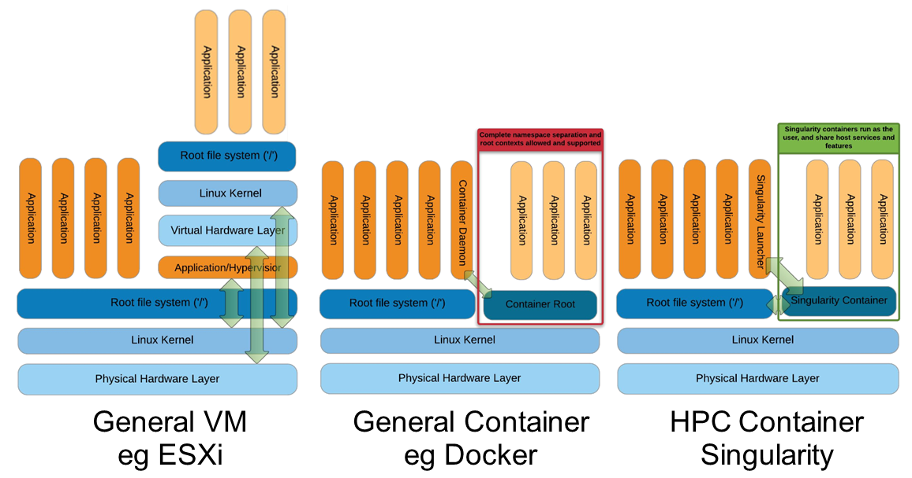

Singularity
Introduction to Singularity
- Focus:
Reproducibility to scientific computing and the high-performance computing (HPC) world.
Origin: Lawrence Berkeley National Laboratory. Later spin-off: Sylabs
Version 1.0 -> 2016
More information: https://en.wikipedia.org/wiki/Singularity_(software)
Singularity architecture
{kind=link}
Strengths |
Weaknesses |
|---|---|
No dependency of a daemon |
At the time of writing only good support in Linux |
Can be run as a simple user |
Mac experimental. Desktop edition. Only running |
Avoids permission headaches and hacks |
For some features you need root account (or sudo) |
Image/container is a file (or directory) |
|
More easily portable |
|
Two types of images: Read-only (production) |
|
Writable (development, via sandbox) |
Trivia
Nowadays, there may be some confusion since there are two projects:
They “forked” not long ago. So far they share most of the codebase, but eventually this might be different, and software might have different functionality.
The former will end up being named Apptainer, and it is currently supported by the Linux Foundation.
Container registries
Container images, normally different versions of them, are stored in container repositories.
These repositories can be browser or discovered within, normally public, container registries.
Docker Hub
It is the first and most popular public container registry (which provides also private repositories).
Example:
https://hub.docker.com/r/biocontainers/fastqc
singularity build fastqc-0.11.9_cv7.sif docker://biocontainers/fastqc:v0.11.9_cv7
Biocontainers
Website gathering Bioinformatics focused container images from different registries.
Originally Docker Hub was used, but now other registries are preferred.
Example: https://biocontainers.pro/tools/fastqc
Via quay.io
https://quay.io/repository/biocontainers/fastqc
singularity build fastqc-0.11.9.sif docker://quay.io/biocontainers/fastqc:0.11.9--0
Via Galaxy project prebuilt images
singularity pull --name fastqc-0.11.9.sif https://depot.galaxyproject.org/singularity/fastqc:0.11.9--0
Galaxy project provides all Bioinformatics software from the BioContainers initiative as Singularity prebuilt images. If download and conversion time of images is an issue, this might be the best option for those working in the biomedical field.
Running and executing containers
Once we have some image files (or directories) ready, we can run processes.
Singularity shell
The straight-forward exploratory approach is equivalent to docker run -ti biocontainers/fastqc:v0.11.9_cv7 /bin/shell but with a more handy syntax.
singularity shell fastqc-0.11.9.sif
Move around the directories and notice how the isolation approach is different in comparison to Docker. You can access most of the host filesystem.
Singularity exec
That is the most common way to execute Singularity (equivalent to docker exec). That would be the normal approach in a HPC environment.
singularity exec fastqc-0.11.9.sif fastqc
Test a processing of a file from testdata directory:
singularity exec fastqc-0.11.9_cv7.sif fastqc B7_input_s_chr19.fastq.gz
Singularity run
This executes runscript from recipe definition (equivalent to docker run). Not so common for HPC uses. More common for instances (servers).
singularity run fastqc-0.11.9.sif
Environment control
By default Singularity inherits a profile environment (e.g., PATH environment variable). This may be convenient in some circumstances, but it can also lead to unexpected problems when your own environment clashes with the default one from the image.
singularity shell -e fastqc-0.11.9.sif
singularity exec -e fastqc-0.11.9.sif fastqc
singularity run -e fastqc-0.11.9.sif
Compare env command with and without -e modifier.
singularity exec fastqc-0.11.9.sif env
singularity exec -e fastqc-0.11.9.sif env
Exercise
- Generate a Singularity image of the last samtools version
Consider and compare different registry sources
Explore the inside contents of the image
Execute in different ways
samtoolsprogram (e. g., using fqidx option)
Singularity recipes
Docker bootstrap
BootStrap: docker
From: biocontainers/fastqc:v0.11.9_cv7
%runscript
echo "Welcome to FastQC Image"
fastqc --version
%post
echo "Image built"
sudo singularity build fastqc.sif docker.singularity
Debian bootstrap
BootStrap: debootstrap
OSVersion: bionic
MirrorURL: http://fr.archive.ubuntu.com/ubuntu/
Include: build-essential curl openjdk-11-jdk bzip2 zip unzip
%runscript
echo "Welcome to my Singularity Image"
fastqc --version
bowtie --version
%post
FASTQC_VERSION=0.11.9
BOWTIE_VERSION=1.3.0
cd /usr/local; curl -k -L https://www.bioinformatics.babraham.ac.uk/projects/fastqc/fastqc_v${FASTQC_VERSION}.zip > fastqc.zip
cd /usr/local; unzip fastqc.zip; rm fastqc.zip; chmod 775 FastQC/fastqc; ln -s /usr/local/FastQC/fastqc /usr/local/bin/fastqc
cd /usr/local; curl --fail --silent --show-error --location --remote-name https://github.com/BenLangmead/bowtie/releases/download/v$BOWTIE_VERSION/bowtie-${BOWTIE_VERSION}-linux-x86_64.zip
cd /usr/local; unzip -d /usr/local bowtie-${BOWTIE_VERSION}-linux-x86_64.zip
cd /usr/local; rm bowtie-${BOWTIE_VERSION}-linux-x86_64.zip
cd /usr/local/bin; ln -s ../bowtie-${BOWTIE_VERSION}-linux-x86_64/bowtie* .
echo "Biocore image built"
%labels
Maintainer Biocorecrg
Version 0.1.0
sudo singularity build fastqc-bowtie.sif debootstrap.singularity
Singularity advanced aspects
Sandboxing
singularity build --sandbox ./sandbox docker://ubuntu:18.04
touch sandbox/etc/myetc.conf
singularity build sandbox.sif ./sandbox
Bind paths (aka volumes)
Paths of host system mounted in the container
Default ones, no need to mount them explicitly (for 3.6.x):
`$HOME`,`/sys:/sys`,`/proc:/proc`,`/tmp:/tmp`,`/var/tmp:/var/tmp`,`/etc/resolv.conf:/etc/resolv.conf`,`/etc/passwd:/etc/passwd`, and`$PWD`Ref
For others, need to be done explicitly (syntax: host:container)
mkdir datatest
touch datatest/testout
singularity shell -e -B ./datatest:/scratch fastqc-0.11.9.sif
> touch /scratch/testin
> exit
ls -l testdir
Exercise
Using the 2 fastq available files, process them outside and inside a mounted directory using fastqc.
Suggested solution
# Let's create a dummy directory
mkdir datatest
# Let's copy contents of testdata in that directory
singularity exec fastqc.sif fastqc datatest/*fastq.gz
# Check you have some HTMLs there. Remove them
rm datatest/*html
# Let's use shell
singularity shell fastqc.sif
> cd datatest
> fastqc *fastq.gz
> exit
# Check you have some HTMLs there. Remove them
singularity exec -B ./datatest:/scratch fastqc.sif fastqc /scratch/*fastq.gz
# What happens here!
singularity exec -B ./datatest:/scratch fastqc.sif bash -c 'fastqc /scratch/*fastq.gz'
Instances
Also know as services. Despite Docker it is still more convenient for these tasks, it allows enabling thing such as webservices (e.g., via APIs) in HPC workflows.
As a simple example, first we create a boostrapped image:
Bootstrap: docker
From: library/mariadb:10.3
%startscript
mysqld
sudo singularity build mariadb.sif mariadb.singularity
mkdir -p testdir
mkdir -p testdir/db
mkdir -p testdir/socket
singularity exec -B ./testdir/db:/var/lib/mysql mariadb.sif mysql_install_db
singularity instance start -B ./testdir/db:/var/lib/mysql -B ./testdir/socket:/run/mysqld mariadb.sif mydb
singularity instance list
singularity exec instance://mydb mysql -uroot
singularity instance stop mydb
More information:
Singularity tips
Troubleshooting
singularity --help
Fakeroot
Singularity permissions are an evolving field. If you don’t have access to sudo, it might be worth considering using –fakeroot/-f parameter.
More details at https://apptainer.org/docs/user/main/fakeroot.html
Singularity cache directory
$HOME/.singularity
It stores cached images from registries, instances, etc.
If problems may be a good place to clean. When running
sudo, $HOME is /root.
Global singularity configuration
Normally at /etc/singularity/singularity.conf or similar (e.g preceded by /usr/local/)
It can only be modified by users with administration permissions
Worth noting
bind pathlines, which point default mounted directories in containers